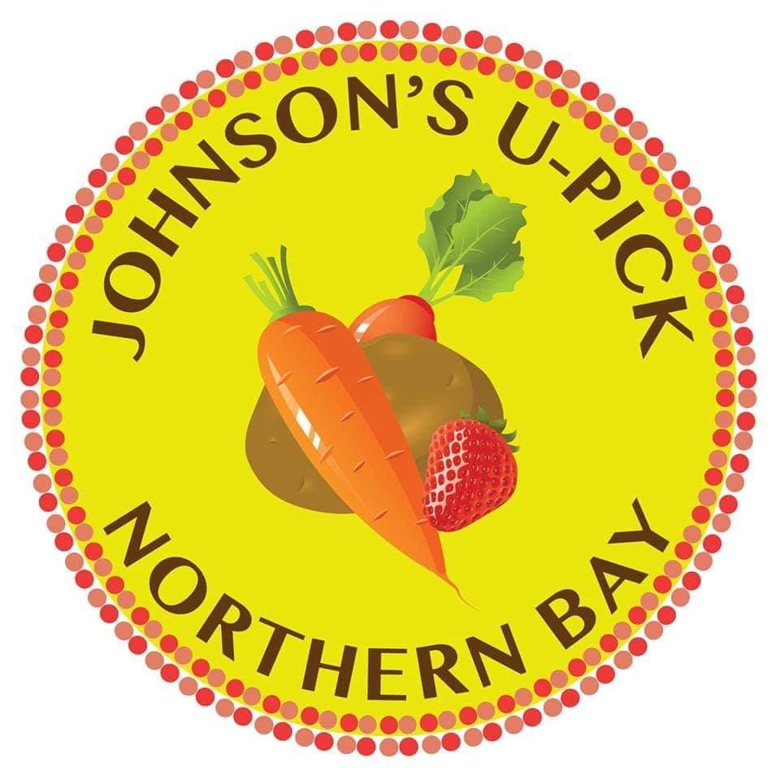
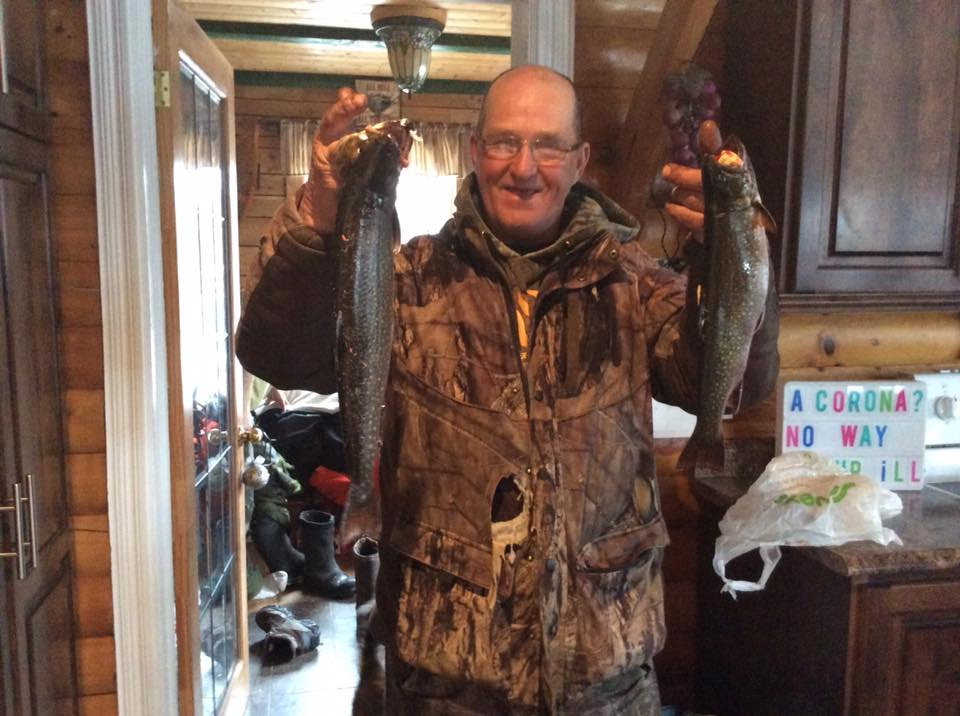

Johnson's Strawberry Farm

Home
Contact
News
Sign Up
Welcome To Our Farm
Sign Up
Always Fresh
Satisfaction Guaranteed
Food for the heart
I'd get sick of my husband before those fresh veggies and berries!
Beverly, From down the shore
The smaller the carrot the sweeter they is!
Bernadette, Da Pearl
I give the Johnson's Farm two fish up!

John, From who knows where

 Beverly, From down the shore
Beverly, From down the shore
Beverly, From down the shore
Beverly, From down the shore